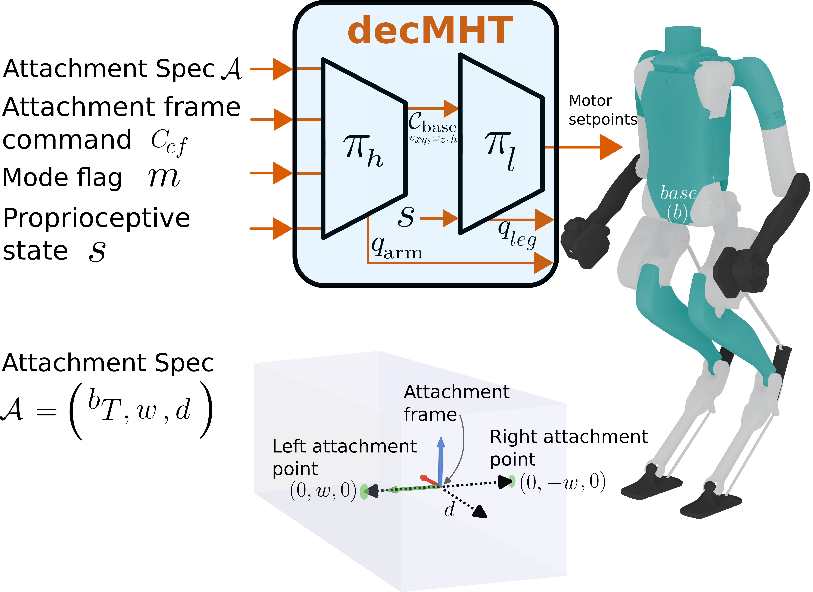

Learning Multi-Humanoid Pickup and Transport via Decentralized Object-Centric Control
Decentralized Multi-Humanoid Transport (decMHT)
Under Review
decMHT is a decentralized object-centric control abstraction that lets teams of humanoid robots cooperatively pick up, transport, and hand off shared objects using gripperless bimanual pinching, spanning single-robot pickup, multi-robot transport, and robot-to-robot handover under one policy, without inter-robot communication.
Abstract
We study cooperative multi-humanoid pickup and transport of objects with varying size, weight, and geometry, requiring robot teams of different sizes. Our approach uses decentralized object-centric control, where each humanoid is assigned a local attachment region on the shared object and learns to realize pickup and transport through gripperless bimanual pinching. This attachment-based interface provides a common control abstraction spanning single-robot pickup, cooperative multi-robot transport, and robot-to-robot handover, without per-task redesign. We find that policies trained only on single-robot pickup already transfer nontrivially to cooperative settings, suggesting that this abstraction captures much of the structure needed for coordination. At the same time, explicit multi-robot training further improves performance, showing that shared-object coupling introduces coordination dynamics that are beneficial to learn directly. We validate the approach in simulation across varying team sizes and object geometries, and demonstrate sim-to-real transfer on hardware, where the learned controllers enable real humanoids to perform cooperative manipulation tasks.
Decentralized Multi-Humanoid Transport (decMHT)
We train decMHT in large-scale parallel simulation and evaluate it on multi-robot teams, diverse payloads, and real Digit V3 humanoid hardware.
Training (Simulation)
decMHT is trained in IsaacLab with large-scale parallel simulation, where humanoids learn to pinch, lift, and transport a shared payload through the object-centric attachment interface.
Generalization to 2-10 Robots (Simulation)
A single trained controller supports teams of up to ten humanoids transporting shared payloads, without retraining for team size.
Single-Robot Pickup (Simulation)
A single humanoid learns to approach, pinch, and lift a payload using gripperless bimanual contact.
Generalization to Diverse Payloads (Simulation)
The same policy generalizes to out-of-distribution objects, including cabinets, concrete blocks, fridges, logs, and beds, with different geometries and attachment layouts.
Robot-to-Robot Handover (Simulation)
Humanoids hand off the payload to one another across multiple elevation differences and under dynamic motion, all using the same object-centric abstraction.
Single-Robot Pickup and Transport (Hardware)
A Digit V3 humanoid executes the learned pickup policy on real hardware.
Multi-Robot Pickup and Transport (Hardware)
Two Digit V3 humanoids cooperatively transport shared payloads of different sizes using the same decentralized policy.
Robot-to-Robot Handover (Hardware)
Humanoids hand off a payload to one another on real hardware under the same object-centric abstraction.
Approach
decMHT introduces a common object-centric control abstraction that spans single-robot pickup, cooperative multi-robot transport, and robot-to-robot handover under one policy.
1. Object-Centric Attachment Interface
Only per-robot attachment regions on the shared object and the desired object motion are specified at the high level. An attachment spec, provided once at the start of a manipulation episode, defines each robot's local attachment region, and an object-centric command, provided at every timestep, specifies the desired payload motion. Each robot then independently executes a local controller using only its interface inputs and local proprioceptive observations, without direct inter-robot communication.
2. Hierarchical Decentralized Control Architecture

A hierarchical decentralized control architecture, together with a training curriculum and reward design, lets humanoids coordinate through the shared object using only local observations and without direct communication. This unified interface generalizes across varying team sizes, attachment layouts, and object geometries, while also allowing robots to join or leave the manipulation task through robot-to-robot handovers.
3. Single-Robot Pretraining Transfers to Cooperative Settings
Policies trained only on single-robot pickup already transfer nontrivially to cooperative multi-robot settings, suggesting that the object-centric attachment abstraction captures much of the structure needed for coordination. Explicit multi-robot training further improves performance, showing that shared-object coupling introduces coordination dynamics that are beneficial to learn directly.
4. Validation in Simulation and on Hardware
We validate decMHT in simulation across varying team sizes (up to ten humanoids) and diverse object geometries and attachment layouts, including robot-to-robot handovers across multiple elevation differences, and demonstrate sim-to-real transfer on one and two Digit V3 humanoids performing cooperative manipulation tasks.
Key Contributions
- We introduce decMHT, a high-level, object-centric abstraction for multi-humanoid loco-manipulation that supports variable team sizes, attachment layouts, and object geometries.
- We develop a hierarchical decentralized control architecture, together with a training curriculum and reward design, that enables humanoids to coordinate through the shared object using only local observations and without direct communication.
- We demonstrate in simulation that a single trained controller supports teams of up to ten humanoids across diverse object geometries and attachment configurations, including robot-to-robot handovers across multiple elevation differences.
- We demonstrate sim-to-real transfer of the approach on one and two Digit V3 humanoids performing collaborative object manipulation.
For full quantitative results, ablations, and analysis, please refer to the paper.
BibTeX
@misc{pandit2026decmht,
title = {Learning Multi-Humanoid Pickup and Transport via Decentralized Object-Centric Control},
author = {Pandit, Bikram and Gadde, Mohitvishnu S. and Shrestha, Aayam Kumar and Fern, Alan},
year = {2026},
note = {Under review}
}